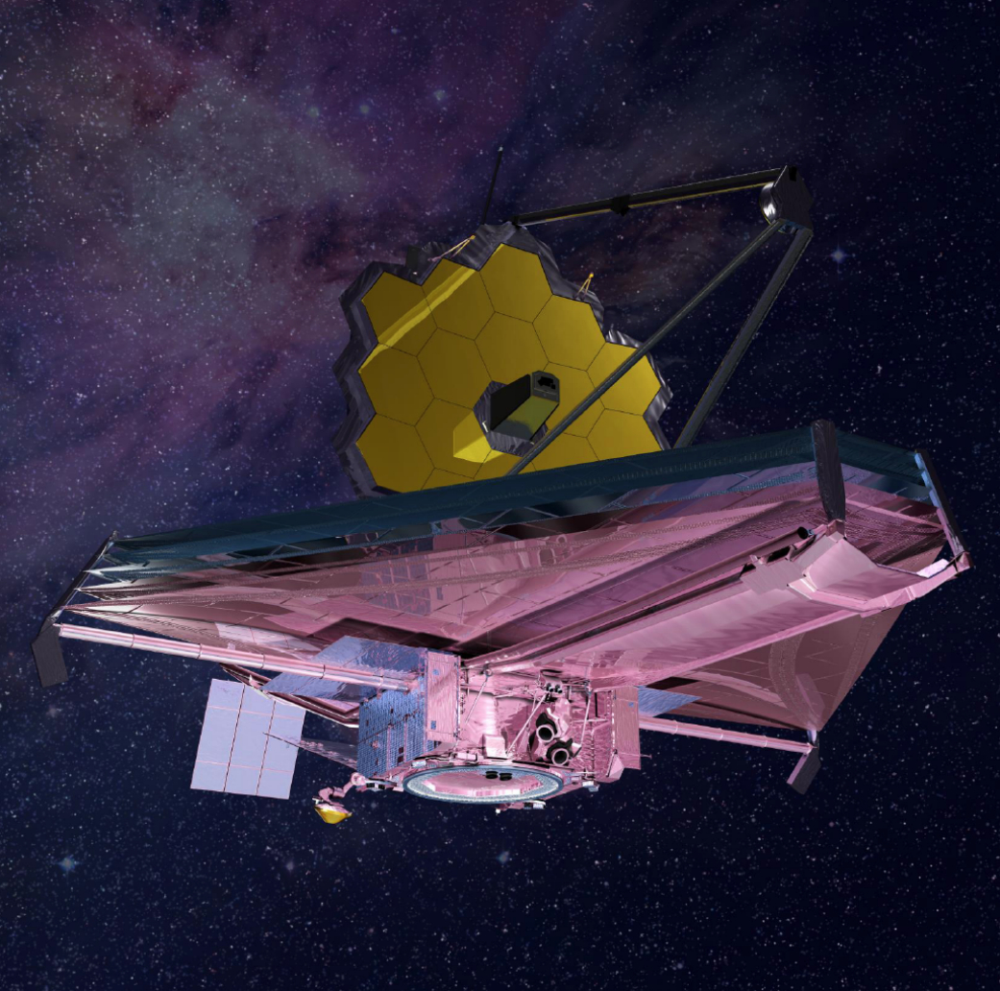

> SPACE FLIGHT · ACTIVE OBSERVATORY
James Webb Space Telescope
Webb is the premier observatory of the next decade, serving thousands of astronomers worldwide.

Webb is the premier observatory of the next decade, serving thousands of astronomers worldwide.

Webb is the largest, most powerful, and complex space telescope ever built and launched into space. It is designed to alter our understanding of the universe by observing cosmic history from our own solar system to the most distant observable galaxies in the early universe.
Operating from the second Lagrange point (L2), approximately 1.5 million kilometers from Earth, Webb keeps its instruments cooled to near absolute zero. This extreme environment is vital for its highly sensitive infrared sensors to detect the faint thermal signatures of early cosmic structures.
Through international collaboration between NASA, ESA, and CSA, the telescope serves as a premier research facility for thousands of astronomers globally, pushing the boundaries of what is possible in modern astrophysics and space exploration.
Key physical metrics and engineering dimensions of the spacecraft observatory.
Folded design of Kapton sheets protecting science instruments from heat.
Gravitational stability orbit position maintaining cold operating shade.
Hexagonal segments operating as a single high-precision aperture.
Observational range tracking initial galaxy formation after the Big Bang.
By leveraging gravitational lensing from giant galaxy cluster Abell 2744, Webb successfully identified UHZ1, a supermassive black hole located in a galaxy 13.2 billion light-years away, providing key data on early galactic structures.
Explore Discoveries DatabaseWebb explores four major areas of the cosmos
Observing the light emitted by the very first stars and galaxies formed after the Big Bang.
Comparing early star groups to today's grand spirals, tracing evolutionary dynamics.
Penetrating dusty stellar clouds to observe young stars and planetary systems forming.
Investigating chemical profiles of exoplanet atmospheres to identify life markers.
Four highly sensitive scientific components observing the infrared cosmos.

NIRCam is Webb's primary imager. It detects light from the earliest stars and galaxies, maps nearby galaxies, and studies exoplanets using coronagraphs that block stellar glare.

NIRSpec splits light into spectra, revealing chemical compositions, temperatures, and speeds. Its revolutionary microshutter array allows observing up to 100 objects simultaneously.

MIRI observes long-wave infrared light. It penetrates dense dust fields, identifying young stars, cold interstellar matter, and distant red-shifted galaxies.

FGS provides high-precision pointing data to keep the telescope locked on targets. NIRISS operates alongside to support exoplanet transit observations and deep-space imaging.
 Science
Science
Webb's discoveries reveal UHZ1 black hole is more massive than previously believed possible, changing galaxy models.
 Image
Image
A deep near-infrared observation shows high-redshift dusty galaxies forming stars rapidly inside cosmic structures.
 Blog
Blog
Telescope telemetry checks path anomalies to rule out major orbits colliding with inner lunar bodies.
 Video
Video
Video breakdown of transit data mapping methane, carbon dioxide, and water vapor signatures in exoplanets.
 Science
Science
Discovery of massive free-floating gas objects challenges standard boundary masses defining planetary labels.
 Image
Image
Magnified background galaxies appear as curved arcs around the core cluster, capturing galaxies from the cosmic dawn.
Help NASA classify Webb galaxies through Galaxy Zoo citizen science. No experience required.
Participate Now →"Webb represents a landmark international engineering achievement, built to answer outstanding questions about the universe and make breakthrough discoveries in all fields of astronomy."